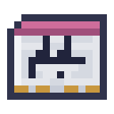
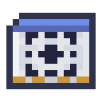

Models and Tests
Every model is tested on every benchmark. Each test uses examples practice never shows, and each job asks its model in exactly the test's format, so a test score is how often an agent will decide right.
| Benchmark | Practice | The test | Passes at | Used for |
|---|---|---|---|---|
| Forecasting | Forecast Dataset | crops' ages and machines' progress at every look | loss ≤ 0.21 | the Forecaster |
| Recall | Storage Dataset | goods and their chests, then one kind asked again | 90% | storing |
| Reversal | Errand Dataset | waymarks on the way out, then the way home | 90% | hauling |
| Induction | Pattern Dataset | letters where a run comes round again | 90% | the Architect |
| Sorting | Sorting Dataset | things named, and the kind of each, some made up | 90% | sorting |
| Orders | Orders Dataset | orders, and the program each means, written whole | 40% | orders |
| Reading | Archive Drive | records no shard carries | loss ≤ 1.40 | the Reader |
| Control | Process Dataset | melts of each ore, held at 90% of their looks | 90% | the Smelter |
| Survey | Survey Dataset | rows of ground, and where the first of an ore lies | 90% | the Surveyor, an exosuit's vein mining |
| Pilot | Flight Dataset | flights in each wind, held at 90% of their looks | 90% | the flight frame, the exosuit |
| Demand | Demand Dataset | what a Port moved out at each look, in rhythms | 90% | a Port's target |
| Watch | Watch Dataset | things going well; the test has some gone wrong | 90% | the Watch Post |
| Retrieval | Retrieval Dataset | things named and asked for, and what each is for | 90% | a terminal's search |
| Quality | Archive Drive | documents, half of them spoiled by bad lines | 90% | the Refinery |
| Containment | Containment Dataset | cycles of each fuel, held at 90% of their looks | 90% | the Reactor |
| Reckoning | Reckoning Dataset | a line of numbers added up, each running sum | 70% | an assay: nine ingots from an ore |
| Programs | a Tuner | what is written for an order, run in a sandbox | 75% | orders that need no yes |
| Precision | a Tuner | melts held at one step of the band | 90% | six ingots from an ore |
| Modular | Modular Dataset | sums round a wheel, pairs practice never shows | 90% | finding a rule |
| Imitation | Imitation Dataset | what mobs really did, from fights it has not read | 76% | the Arena |
| Ground | Ground Dataset | rows of ground it has not read, block by block | loss ≤ 0.97 | writing ground |
Hover over a benchmark on the Core's Tests tab for the exact format. The Try tab shows the model answering a fresh example, the way an agent would ask it.
Practising several things
The Core's four Data slots are practised together: every step draws its batch from one of them in turn. One model can learn everything, if it is big enough and shaped for it. Each benchmark asks for something different: forecasting a machine only needs the look just before, and so does forecasting an average field; recall has to find a pair far back; reversal needs to know where each waymark was; induction has to look back for what followed the same letter last time; sorting has to find the word in a name that settles its kind. Orders have to write out a whole program, copying its names a letter at a time, and only a program right to its last letter counts: a model that passes gets about two orders in five right the first time, the long ones least, which is why an agent reads those back. When its curve flattens, lower the learning rate.
Practising by playing
Control is practised by playing, not from examples: the Core plays melts with the model's own choices, and the model learns from each choice by how much better the melt did after it than after other choices made at the same look and temperature. A choice that went well is learned from more, one that went badly less. It takes longer than learning from examples, since every step plays its melts first. A melt is held when 90% of its looks end in the band, which is what earns a Smelter's third ingot, and the test scores the share held of the ore the model holds worst. Holding a melt means foreseeing what comes, when the fresh charges drop the melt and how the ore drifts, which needs a model that knows where in the melt it is and which ore it began with. A model that sees only the last few characters holds most copper melts but no gold or iron; a two-block transformer passes after two to four hundred steps, though its score still swings now and then as it practises.
Knowing the pairs, and knowing the rule
The Modular Dataset asks for sums on a wheel of 59 teeth, a character each: ab= and what they come to, going round. Practice shows four pairs in ten, always the same ones, and the test asks the rest. Nothing but the rule carries from one to the other.
A small model learns the pairs it is shown by heart in a few hundred steps, and for a long time after that knows none of the others. Its training loss is near zero and its test stays where it started. Then, with enough weight decay on the Train tab, the test climbs to the top within a few thousand steps. Decay keeps only what keeps paying, and the rule is far smaller than a table of pairs. It is worth seeing once.
Two Delay Lines on an Embedding Table of width 32, into a Concatenator, a Linear Layer of 128, an Activation and a Linear Layer of the vocabulary's width will do it (21,000 parameters). At a learning rate of 1e-2 and decay 0.1 it knew its pairs by step 500 and all the rest by about step 8,000, under half a minute of training; at the Core's usual decay of 0.01 it knew 12% of the rest after 40,000 steps. A two-block transformer 32 wide does the same at decay 0.3 in about 10,000. Under very strong decay a transformer learns the rule straight away and never knows only the pairs at all.
The Core reads every pair on both sides every 250 steps. A model that knew at least 80% of its pairs and at most 30% of the rest, for at least 1,000 steps and half as long again as it took to learn them, and then gets 90% of the rest, has grokked.
Checkpoints
 Crafting
Crafting


A Checkpoint holds one model: its machines, its weights, how long it trained and its scores. Saving runs every test first, so the scores on a checkpoint are always the ones it earned. Saving over a checkpoint replaces the model on it.
How big a model may be
An agent can carry 160 KB of weights in its head. A model trained in fp32 takes four bytes a weight, which makes that 40,000 parameters; a narrower recipe fits more of them in. A bigger model stays in a Model Server and is asked over relays: see Serving Models. The Train tab counts a model's parameters, and the Recipe tab what they take. An exosuit's board holds as many bytes, and carries bigger models by quantizing them.
Reading ahead
A model that can see the letter it is asked to predict is not predicting anything. The Core checks every model for this. A model that reads ahead scores very well and means nothing; its checkpoint says so, and the Reader turns it away.







 Amethyst ShardWeight CrystalCheckpoint
Amethyst ShardWeight CrystalCheckpoint